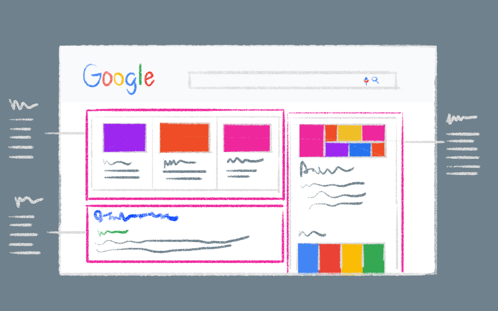

Projects
Portfolio
This is a collection of my data analyst projects in machine learning, web scraping, and exploratory analysis.
Data Analysis with SQL and Python Portfolio Project
.png)
Data Description The dataset encompasses detailed insights into diverse renewable energy systems, encompassing metrics such as installed capacity, energy production, consumption, storage, investment, and environmental impact. Our objective is to furnish a holistic perspective on renewable energy, conducive to research and analysis in the field of sustainable energy.
Scraping Google Search Results with Python
A Search Engine Results Page (SERP) is the compilation of results presented by a search engine when prompted by a specific word or keyword phrase query. In this project, we aim to scrape data for a hypothetical website specializing in artificial intelligence and examine the strategies employed by competitors. Our chosen library for this task is g-spread.
Machine Learning Regression Analysis Portfolio Project
.png)
Regression analysis is a form of predictive modeling technique that investigates the relationship between a dependent (target) and independent variable(s) (predictor). It is used to predict continuous variables. For instance, in this project, we will be predicting the price of the car (Toyota Corolla) based on its ‘Age’, ‘KM’, ‘FuelType’, ‘HP’, ‘MetColor’, ‘Automatic’, ‘CC’, ‘Doors’, ‘Weight’.